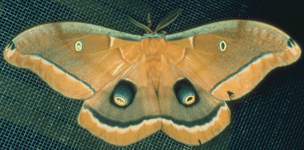

Antheraea polyphemus
Return to Dominick Home Page

Antheraea polyphemus is a wild silkmoth common to many areas of North America.
The caterpillar happily eats oak, willow and a variety of other trees, but is not a pest. A. polyphemus has been the focus of much scientific study, especially regarding their use of sex-pheromones in mating. Sex-pheromones and other odors are detected by their magnificent antennae.